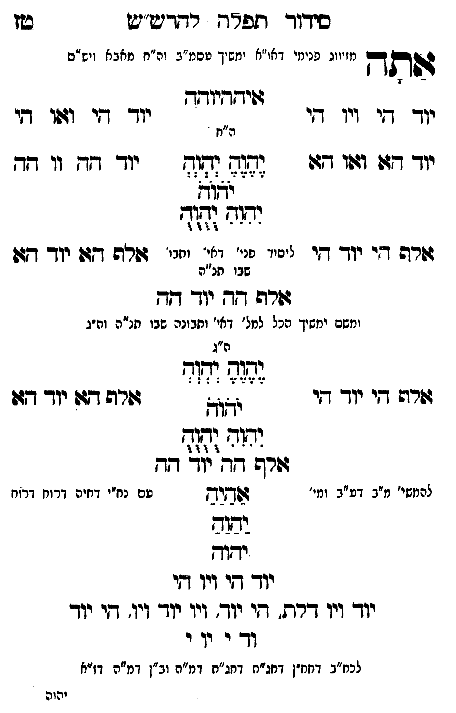

Neue Klartextfassung
אתה [מזיווג פנימי דאו"א ימשך עסמ"ב ונרנח"י דחכמה ויש"ס] איההיוהה === טבלה === [טור ימין] יוד הי ויו הי יוד הא ואו הא אלף הי יוד הי [טור אמצעי] [ה"ח] יֶהֶוֶהֶ יְהְוְהְ יֹהֹוֹהֹ יִהִוִהִ יֻהֻוֻהֻ [ליסוד פני' דאי' ותבו' שבו חו"ח] [טור שמאל] יוד הי ואו הי יוד הה וו הה אלף הא יוד הא === סוף טבלה === אלף הה יוד הה [ומשם ימשך הכל למל' דאי' ותבונה שבו חו"ח וה"ג] === טבלה === [טור ימין] אלף הי יוד הי [טור אמצעי] [ה"ג] יֶהֶוֶהֶ יְהְוְהְ יֹהֹוֹהֹ יִהִוִהִ יֻהֻוֻהֻ [טור שמאל] אלף הא יוד הא === סוף טבלה === אלף הה יוד הה [להמשי' מ"ב דע"ב ומי' עם נח"י דחיה דרוח דרוח] אַהַיַהַ יַהַוַהַ יהוה יוד הי ויו הי יוד ויו דלת, הי יוד ויו יוד ויו, הי יוד וד י וי י [לכח"ב דחח"ן דחג"ת דחג"ת דמ"ה וב"ן דמ"ה דז"א]
Original gegen neue OCR · Niqqud für Vergleich ausgeblendet
Original
אתה [מזיווג פנימיK036-001 דאו"א ימשך עסמ"ב ונרנח"י דחכמה ויש"ס] איההיוהה === טבלה === [טור ימין]K036-002 יוד הי ויו היK036-003 יוד הא ואו הא אלף הי יוד הי [טור אמצעי] [ה"ח] יהוה יהוה יהוה יהוה יהוה [ליסוד פני' דאי' ותבו'K036-004 שבו חו"ח] [טור שמאל] יוד הי ואו הי יוד הה וו הה אלף הא יוד הא === סוף טבלה === אלף הה יוד הה [ומשם ימשךK036-005 הכל למל' דאי' ותבונהK036-006 שבו חו"ח וה"ג] === טבלה === [טור ימין] אלף היK036-007 יוד הי [טור אמצעי] [ה"ג] יהוה יהוה יהוה יהוה יהוה [טור שמאל] אלף האK036-008 יוד הא === סוף טבלה === אלף הה יוד הה [להמשי'K036-009 מ"ב דע"בK036-010 ומי' עםK036-011 נח"י דחיה דרוח דרוח] אהיה יהוה יהוהK036-012 יוד היK036-013 ויו הי יודK036-014 ויו דלת, הי יודK036-015 ויו יוד ויו, היK036-016 יוד וד י ויK036-017 י [לכח"בK036-018 דחח"ן דחג"ת דחג"תK036-019 דמ"ה וב"ן דמ"ה דז"א]K036-020
OCR · fehlbar
סידוך תפרח רדדיש"ט טז הב[בבם י ימי דא. "שא ימשי ש ה" א וח ז 2443 מזיווג פנינזיK036-001 דאו"א ימשיך טסמ"ב וה"ח מאב א ויש"ס גפיקדיודזך יוך דזי ויו -י יוך דזי וגו זי ה"ח - יוךך ד(גו ודפו דז: (ז44ז7 (דוזח יוך גד. ו1 דד לל לל ללללל8 זרה דיK036-002 יוד דזי ייניי 0 - (צ- יייי' זזה דזןK036-003 יוד דז:K036-004 שבו תנ"ה דשרש דד יוך גד ומשם ימשיךK036-005 הכל למל' דאי' וחבונהK036-006 שבו חנ"ה וה"ג ה"ג (י ו 3 - . ו זזרו9 דיK036-007 יוד ד לא גזרה דף:K036-008 יוד דז: ו( וד(- - - 4 ו ו 4 ורב דד' יוך -ג- להמשי'K036-009 מ"ב דט"בK036-010 ומי' דשחישץ טםK036-011 נח"י דחיה דרוח דרוח ושוב ידוךK036-012 יוד דיK036-013 ויו די יוךK036-014 ויו דרת. די יוך.K036-015 ויו יוך ויו. דיK036-016 יוד וד י יוK036-017 י לכח"ב.K036-018 דחח"ן דחג"ח דחג"חK036-019 דמ"ה וב"ן דמ"ה דז"א יהוהK036-020